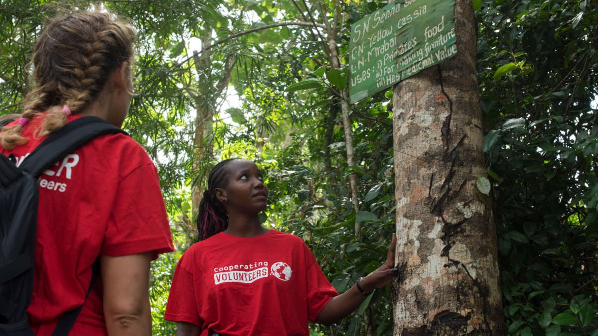
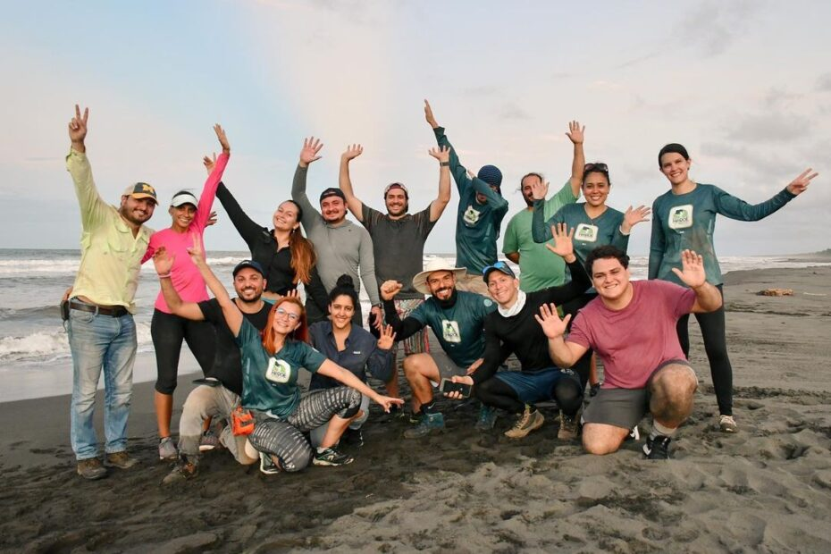
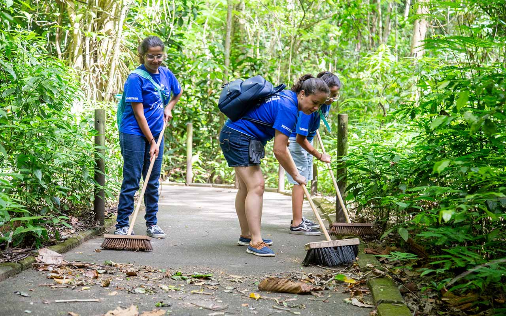
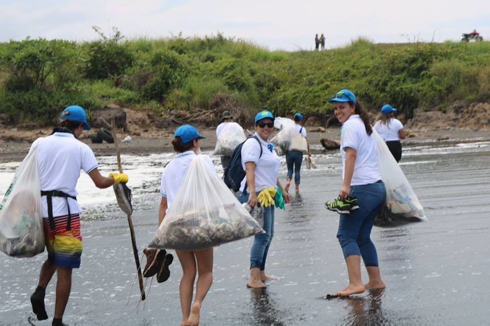
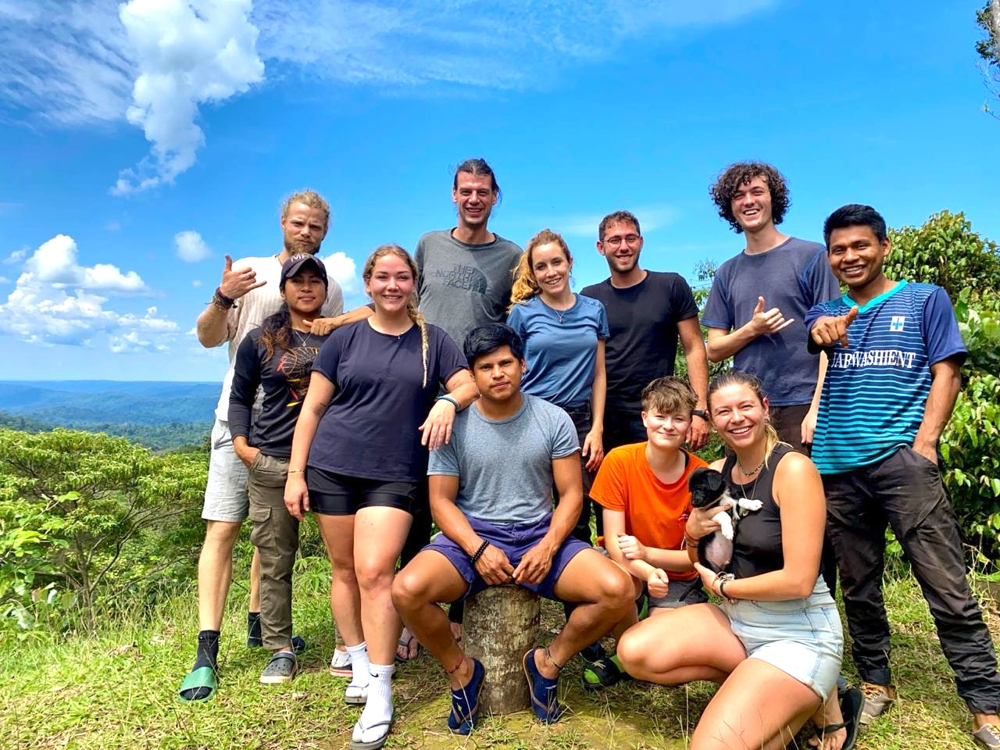
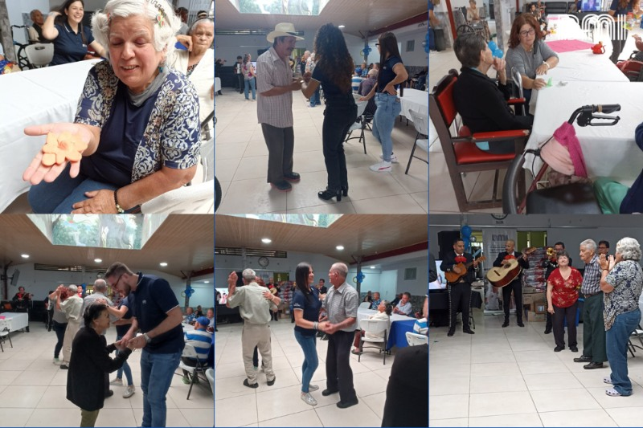
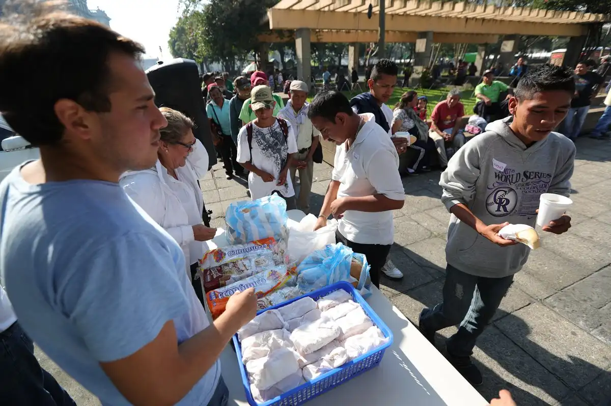
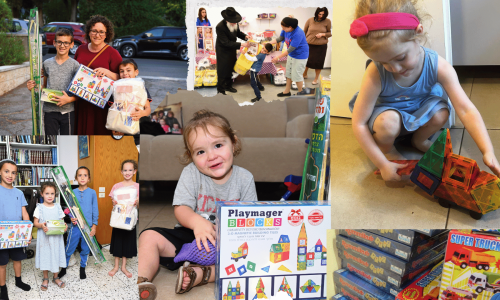

Datos de Impacto
- +1000 voluntarios activos
- +250 proyectos completados
- Presencia en 12 ciudades
- Alianzas con ONGs locales y municipalidades
Testimonios
“Gracias a VolunTeam organizamos nuestra primera clínica móvil en zonas rurales.”
- Municipalidad de Turrialba
“VolunTeam me dio una forma de ayudar a mi comunidad y hacer nuevos amigos.”
- Laura M., voluntaria en San José
“Nos ayudaron con actividades recreativas para niños en riesgo social, fue hermoso.”
- ONG Sonrisas del Mañana
Galería de Eventos







